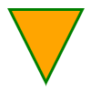

Introduction #
g2 is a 2D graphics library based on the command pattern principle. It supports the building of a command queue of graphics instructions for later addressing one or multiple concrete rendering contexts with an extra benefit of executing the commands in a compact time frame.
g2 is intentionally doing exactly one thing - 2D graphics. It has no high level graphical objects, no user event handling and no animation or interaction capabilities inherently built in. g2 is tiny and completely transparent.
It is aimed at users as scientists and engineers who want an easy way to occasionally create some prototypal - static or interactive dynamic - 2D web based graphics. They want a small and high performant library with a simple and intuitive API fully documented on a single page cheat sheet. In fact g2 is currently used for over a year in engineering education.
How Queue Processing Works #
Let's look at a simple example drawing a triangle first.
const g = g2(); // create g2 command queue object.
g.p() // begin path
.m({x:10, y:10}) // first point
.l({x:90, y:10}) // second point
.l({x:50, y:90}) // third point
.z() // close path
.drw({ls:"green",lw:3,fs:"orange"}) // stroke and fill
.exe(ctx); // finally render graphics addressing 'ctx'.

There are only two objects g2 and ctx involved. Both are nearly completely independent
from each other. Only the last code line exe establishes a loose connection between them.
With every invokation of a g2 command method a function pointer
is stored in g2's command queue. Finally with the help of the g2.exe method the
function pointers are resolved accordingly and handed
over to a graphics context instance for rendering.

The command queue is implemented as a simple array holding objects containing a function pointer and an optional arguments array. So the command queue of the example above, which is build at compile time - i.e. compiling the queue - looks like this:
[ {c:g2.prototype.p},
{c:g2.prototype.m, a:{x:10,y:10}},
{c:g2.prototype.l, a:{x:90,y:10}},
{c:g2.prototype.l, a:{x:50,y:90}},
{c:g2.prototype.z},
{c:g2.prototype.drw} ]
At rendering time the final exe command resolves with the knowledge of a concrete renderer
instance type the function pointers to (here HTML canvas context "2d"):
[ {c:CanvasRenderingContext2D.prototype.beginPath},
{c:CanvasRenderingContext2D.prototype.moveTo, a:[10,10]},
{c:CanvasRenderingContext2D.prototype.lineTo, a:[90,10]},
{c:CanvasRenderingContext2D.prototype.lineTo, a:[50,90]},
{c:CanvasRenderingContext2D.prototype.closePath},
{c:g2.prototype.drw.c2d} ]
Applying this array of function pointers to a specific canvas context results in only very little additional runtime cost
- performing the loop
- resolving the function pointers
- possibly invoking wrapper functions
and moderate additional memory cost (the queue) compared to directly invoking the canvas context methods, which would read here:
ctx.beginPath();
ctx.moveTo(10,10);
ctx.lineTo(90,10);
ctx.lineTo(50,90);
ctx.closePath();
ctx.fill(); ctx.stroke(); // g2.prototype.drw
Once you have successfully built a command queue, you can apply it repeatedly
to one or multiple graphics contexts via its exe-method.
Benefits #
So g2 is not merely a thin wrapper around the canvas context. It is conceptually renderer agnostic and helps in
- collecting graphics commands in a queue for fast and compact rendering - possibly repeatedly - at a later time.
- decoupling the graphics commands from the renderer instance as well as abstracting away the renderer API.
- separating an applications model from its view.
Let's elaborate these points a little more.
Fast Rendering #
Graphics intense applications like simulations and games often work with back buffers for improving the visual experience. A back buffer is a temporarily invisible graphics context used to draw on during a certain time frame. On completion that graphics context is made visible then. Intermediate flicker effects are minimized by this technique. A g2 object, while at first collecting graphics commands and finally rendering them, is acting similar to a back buffer.
Decoupling #
A g2 object is very loosely coupled with a graphics context. We can decide at the latest at rendering time, where to send the graphics commands stored in the queue to, or even send them to multiple different graphics contexts. Rendering the same graphics to a main window and in parallel to a small zoom-in window would be an example for this.
With the help of an SVG interface library (which is additionally provided), the same graphics commands could be used to create SVG graphics. This is advantagous in non-graphical environments like Node.js.
Separating Model from View #
Assume a graphics application managing geometric shapes. The applications model will primarily consist of a container holding objects representing shapes. Discussing now the problem, how to render the shapes (the view in MVC) may lead to the demand, to strictly separate the model from the view. But then, who knows better how to draw a shape than the shape itself?
class Circle {
constructor(x,y,r) {this.x=x;this.y=y;this.r=r}
render(g) {g.cir(this.x,this.y,this.r)}
}
class Rect {
constructor(x,y,b,h) {this.x=x;this.y=y;this.b=b;this.h=h}
render(g) {g.rec(this.x,this.y,this.w,this.h)}
}
const model = [new Circle({x:40,y:60,r:20}),new Rect({x:45,y:25,b:40,h:40})],
g = g2().grid(),
ctx1 = document.getElementById('c1').getContext('2d'), // view 1
ctx2 = document.getElementById('c2').getContext('2d'); // view 2
for (let i of model) { // build command queue of ...
i.render(g); // ... model's shapes drawing commands.
}
g.exe(ctx1); // render to view 1
g.exe(ctx2); // render to view 2

One or multiple lightweight g2 objects may act here as neutral mediators between the model's shapes and the graphics context, as in: "Show me how to draw yourself, I will hand this recipe over to a suitable renderer later!"
Feature Details #
The function call g2() works as a constructor without
requiring new. The implementation
concept is more functional than object oriented. g2 inherently has
no knowledge of the size of the graphical viewport - think of an infinite canvas in both dimensions -
until rendering time.
g2 basically supports
- method chaining.
- low level path commands with short names adopted from SVG.
p,m,l,q,c,a,z
- higher level element commands.
rec,cir,lin,arc,ell,ply,img,txt
- rendering commands.
stroke,fill,drw,clr,grid
- state stack for style properties and transformations.
beg,end
- managing the command queue.
cpy,del,dump
- reuse of other g2 objects.
use
- render the command queue to a graphics context.
exe
- viewport manipulation methods.
view
- embedding javascript functions
ins
- HTML canvas 2D interface.
At current g2 is considered feature complete.
As it is very easily extensible, adding custom commands or build custom symbol libraries on top of g2 is a nobrainer. Have a look at g2-mec as an example.